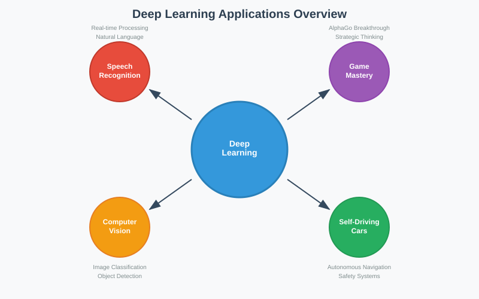
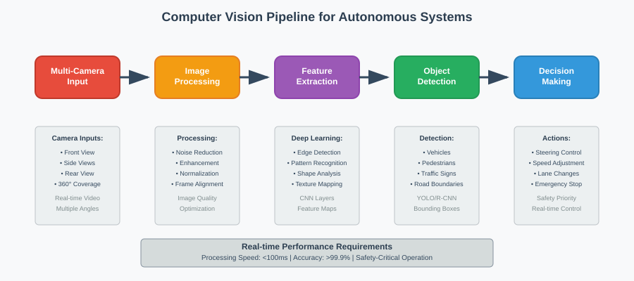
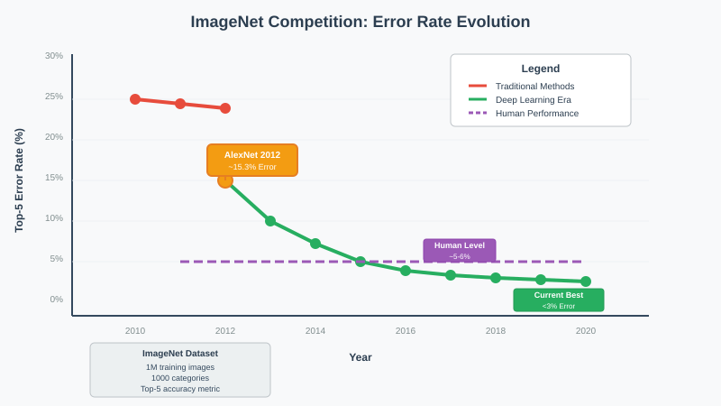
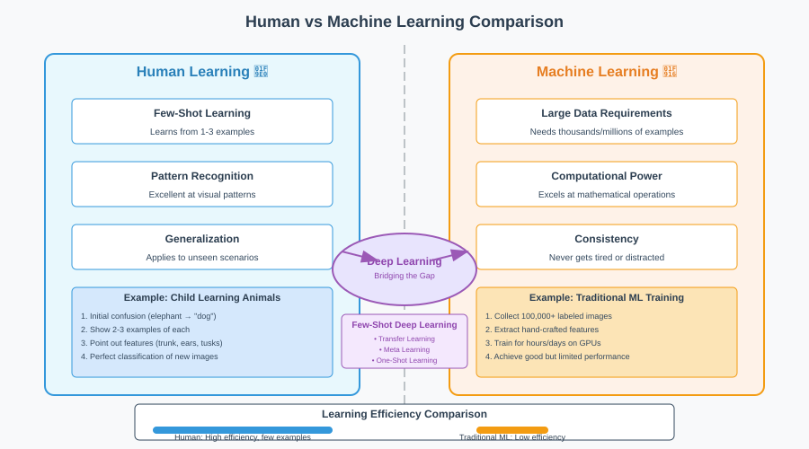
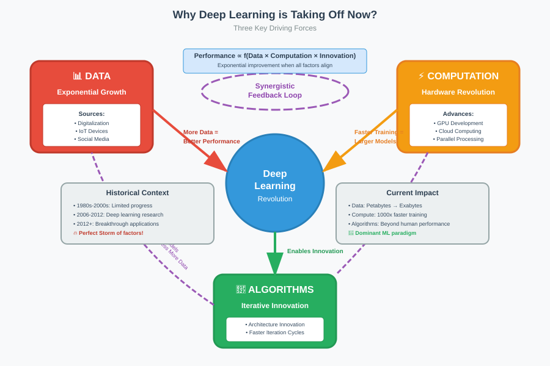

Introduction to Deep Learning
Quick Navigation 🧭
- 🚀 What is Deep Learning?
- 🎯 Revolutionary Applications
- 👁️ Computer Vision Breakthrough
- 🏆 ImageNet Competition
- 🧠 Human vs Machine Learning
- 📈 Why Deep Learning is Taking Off
- 📚 References & Further Reading
What is Deep Learning?
Deep learning represents a revolutionary and exciting approach in artificial intelligence that has transformed how we solve complex problems. Unlike traditional machine learning algorithms such as Linear Regression and Logistic Regression, which are well-understood, deep learning operates as a powerful yet mysterious technology.
Key Characteristics
High Performance, Low Interpretability: Deep learning models achieve breakthrough performance but often function as "black boxes," making it difficult to understand their decision-making process. This trade-off between accuracy and interpretability becomes critical in high-risk domains like healthcare.
Model Complexity: The increased model complexity in deep neural networks delivers superior prediction power but comes at the cost of reduced explainability compared to traditional machine learning approaches.

Critical Considerations
In high-risk domains such as healthcare, understanding model behavior becomes crucial for building trust and ensuring reliable predictions. While some applications may tolerate black-box behavior, medical diagnosis and treatment decisions require transparent, interpretable models.
Revolutionary Applications
Deep learning has revolutionized multiple domains, delivering unprecedented performance improvements across various fields:
🎤 Speech Recognition
Natural Language Understanding: Deep learning has given computers the ability to understand natural language with remarkable accuracy. Modern speech recognition systems achieve:
- Real-time processing capabilities
- Markedly improved accuracy over traditional methods
- Seamless integration into consumer devices
Example: Amazon's Alexa voice assistant demonstrates how deep learning enables instant voice transcription and natural language processing.
🎮 Game Mastery - AlphaGo
The ancient game of Go was long considered the holy grail of AI game playing:
Historical Context: Until 2016, the best computer programs for Go were nowhere near the level of top human players, unlike chess, checkers, or backgammon where computers had already achieved dominance.
Breakthrough Achievement: AlphaGo became the first program to defeat professional Go players, marking a significant milestone in AI development.
🚗 Self-Driving Cars
Computer Vision Integration: Deep learning enables autonomous vehicles to process visual information from multiple camera angles in real-time, allowing them to:
- Navigate streets and highways safely
- Detect and avoid obstacles including other vehicles, pedestrians, and traffic signs
- Make real-time driving decisions based on visual input
👁️ Computer Vision Systems
Modern computer vision applications powered by deep learning now outperform humans at various visual recognition tasks, representing a fundamental shift in machine perception capabilities.
Computer Vision Breakthrough
Computer vision represents one of the most exciting applications of deep learning, enabling computers to replicate and improve upon human visual perception.
Definition and Scope
Computer Vision is a field of study that enables computers to: - Collect information from digital images and videos - Process visual data to define attributes and patterns - Replicate and improve upon human visual system capabilities

Medical Applications
🔬 Cancer Detection
Diagnostic Accuracy: Image recognition algorithms can detect subtle differences between cancerous and non-cancerous tissues by analyzing: - MRI scans for tumor identification - Medical photographs for malignant vs. benign classification - Microscopic imaging for cellular analysis
😷 Mask Detection
Public Health Applications: Deep learning models can identify protective equipment usage, including: - Mask compliance monitoring - Social distancing enforcement - Health protocol adherence tracking
Autonomous Vehicle Vision
Real-time Processing: Computer vision enables self-driving cars to:
- Capture multi-angle video from cameras positioned around the vehicle
- Process images in real-time to identify road boundaries, traffic signs, and obstacles
- Make navigation decisions based on visual input analysis
- Ensure passenger safety through continuous environmental monitoring
Current Applications: Most modern computer vision systems in cancer detection, facial recognition, and autonomous driving rely heavily on deep learning architectures.
ImageNet Competition
The ImageNet dataset and its associated competition serve as the gold standard for measuring computer vision progress and have driven significant advances in deep learning.
Dataset Specifications
ImageNet Dataset Structure: - 1 million labeled images for training - 50,000 validation images for model tuning - 100,000 test images for final evaluation - 1,000 different categories for classification
Evaluation Methodology
Top-5 Accuracy Metric: The competition uses a more lenient evaluation approach where:
Success Rate = (Images where true label ∈ top 5 predictions) / (Total test images)
This metric acknowledges the inherent difficulty of image classification and provides a more realistic assessment of model performance.

Historical Performance Trends
Pre-2012 Era: Traditional computer vision algorithms achieved error rates between 25-30%, significantly higher than human-level performance.
2012 Deep Learning Revolution: A team of researchers achieved approximately 15% error rate using deep learning, marking the beginning of the deep learning era in computer vision.
Current State: Modern deep learning algorithms achieve less than 5% error rates, matching or slightly exceeding human performance levels.
Significance
The ImageNet competition demonstrates how deep learning has rapidly reshaped the boundaries of what was previously considered possible in machine learning, accomplishing in a few years what researchers thought would take decades.
Human vs Machine Learning
Understanding the fundamental differences between human and machine learning capabilities reveals both the challenges and opportunities in artificial intelligence development.
Machine Advantages
Computational Superiority: Machines excel at tasks requiring: - Mathematical calculations (products of large numbers) - Data processing at scale - Repetitive operations with consistent accuracy - Memory storage and retrieval
Human Advantages
Pattern Recognition: Humans demonstrate remarkable abilities in:
🧒 Few-Shot Learning Example
Child Learning Process: When a child learns to distinguish between animals:
- Initial confusion: May confuse elephants and dogs due to limited experience
- Rapid learning: Requires only a few examples to identify key differences
- Feature extraction: Learns to recognize distinctive features (trunk, ears, tusks)
- Generalization: Can correctly classify completely new images
This phenomenon is called one-shot learning or few-shot learning because it requires minimal examples to learn entirely new categories.

The Learning Gap
Human Efficiency: The human mind excels at understanding patterns from very small datasets, often requiring just one or a few examples to master new concepts.
Machine Requirements: Traditional machine learning approaches require large datasets and extensive training to achieve comparable performance levels.
Modern Developments
Deep Learning Integration: Current research focuses on incorporating few-shot learning techniques into deep learning frameworks, attempting to bridge the gap between human and machine learning efficiency.
Why Deep Learning is Taking Off
Deep learning has existed for decades, but three key factors have enabled its recent explosive growth and dominance in machine learning applications.

📊 1. Data Availability
Digital Revolution Impact: - Massive data generation through digitalization processes - IoT device proliferation creating continuous data streams - Performance scaling: Deep neural networks consistently improve with larger datasets - Algorithm stability: Performance gains achievable without changing underlying algorithms
Key Insight: Deep learning models demonstrate a unique characteristic where more data directly translates to better performance, unlike many traditional algorithms that plateau with additional data.
⚡ 2. Computational Power
Hardware Advancement: - Exponential growth in available computational resources - Cloud computing democratization of high-performance computing - GPU development optimized for parallel processing requirements - Training speed improvements enabling faster model development
Impact: Enhanced computational power enables researchers to train larger, more complex neural networks in reasonable timeframes, facilitating rapid experimentation and improvement.
🔧 3. Algorithm Innovation
Iterative Improvement Process: - Architecture evolution through systematic experimentation - Faster iteration cycles enabled by improved computational resources - Performance optimization through algorithmic refinements - Incremental and breakthrough gains in model performance
Feedback Loop: Improved computational power accelerates algorithm development, which in turn enables more sophisticated models that can leverage larger datasets more effectively.
Synergistic Effects
These three factors create a positive feedback loop:
More Data → Better Models → Faster Computation → Algorithm Innovation → More Data
This synergistic relationship has established deep neural networks as the dominant algorithm in modern machine learning applications.
References & Further Reading
📖 Essential Papers
- AlphaGo Research: Mastering the game of Go with deep neural networks
- ImageNet Classification: Deep Residual Learning for Image Recognition
- One-Shot Learning: Matching Networks for One Shot Learning
- Computer Vision Survey: Deep Learning for Generic Object Detection
🔗 Datasets & Resources
- ImageNet Database: Large Scale Visual Recognition Challenge
- Deep Learning Frameworks: PyTorch | TensorFlow
🎓 Educational Materials
- Stanford CS231n: Convolutional Neural Networks for Visual Recognition
- Deep Learning Book: Ian Goodfellow, Yoshua Bengio, and Aaron Courville
🚀 Interactive Learning
 PyTorch Image Classification Tutorial
PyTorch Image Classification Tutorial
Pre-trained Vision Models
Last Updated: September 2025 | Next Topic: Neural Network Fundamentals →